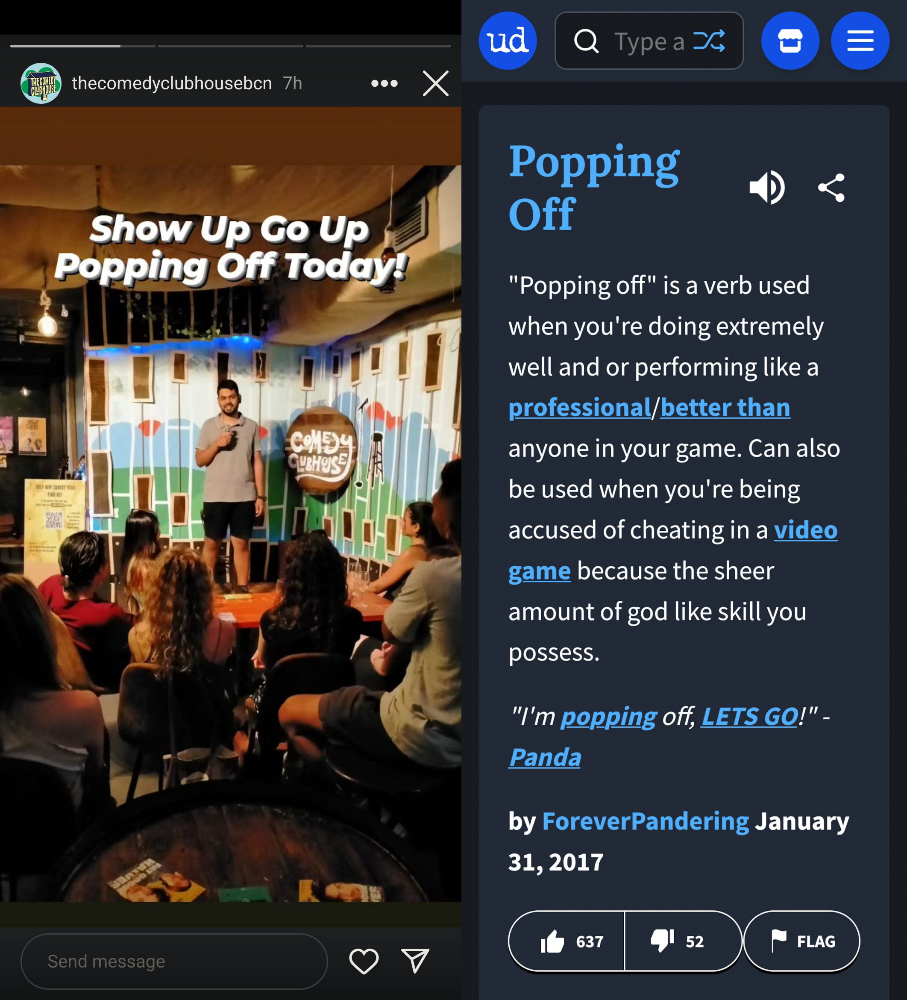
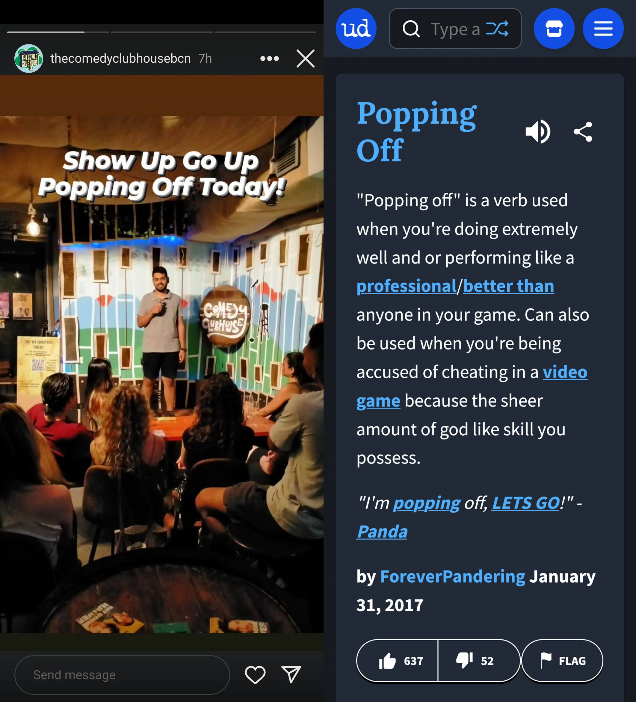

ये ज़िंदगी एक पल की
ये घमंड एक शंद का
कभी खुशी कभी तन्हाई
आए हैं खिलाड़ी इधर न कम
पर भूल जाते हैं लोग
मुसाफ़िर हैं हम
जो आया है उसे जाना है
ये खेल लम्हे भर का
और आख़िरत है सदा के लिए
- An aba shayari by Mohammad Sheraj
वो जिसे हर ज़माने ने चाहा,
उसी ने न ज़माने को चाहा।
इन्किलाब की तमन्ना है तो लिए,
क्या करें जब मालिक-ए-हक़ीक़ी ख़ुदा ही है?
चेहरे की अरज़ियाँ किस से माँगें,
जब अता करने वाला ही इनकारे।
जब इनाम ही सज़ा लगे,
ख़ुद से लड़ें या ख़ुदा से लड़ें?
समझाते हैं ये हक़ीक़त ख़ुद को ही,
कि इस दुनिया में फ़िरदौस हो सकता नहीं।
क्यूँकि जिन्हों ने रद्द-ए-ख़ुदा किया,
उन्हों ने एक न एक रोज़ ख़ुद को ही गँवा दिया।
- An aa shayari by Mohammad Sheraj
चलती है शहरों में चीज़ें अनेक
कभी एक नरम दिल का राजा
तो कभी तानाशाह निर्दय
आते हैं बड़े बड़े राज
जो लगते हैं कभी होंगे न पर्जय
पर होते हैं अंत हर एक
चलती है ये दुनिया हमेशा
बड़े शहरों में छोटी छोटी बातें
तो होती रहती है
कब सीखेगा इंसान ये
क्या ये सीख सीखना है हर युग नए
करता है गलत सब जान के
काश समझ जाए इंसान एक बार में
नहीं है रब्बानी हिकमत बेकार की
बहुत हैं मिट गए
पर यही लीलें रही है इस संसार के
इतिहास है दोहराता हर बार
दिन होते कभी अच्छे तो कभी बुरे
पर जो भी बोलो
अंधेर नगरी चौपट राजा जैसा न कोई एक
- An abaca shayari by Mohammad Sheraj
दिल से न माँगो कोई चीज़ इतना
पूरी न हो जाए वही
चाहते तो हैं हम बहुत कुछ
पर सच में क्या चाहे न जाने कोई
कह दो हमारे दुश्मन
हो जाए पूरी तरह मुन्क़रिद (extinct)
फिर इश्तियाक़ (longing) करते हैं हम
आस पास नए लोग हो कोई
चाहते हैं हो न काम कोई
पर तबाह कर लेते खुद को मलल (boredom) में ही
बिन बैठे जान की भी बाज़ी लगाकर
हमेशा ढूंढने चलते हैं कोई रोमांच नई
चाहते हैं हम हो सबसे आगे
रोक कर भेज देते जबरन पीछे सभी
पर फिर चल देते कहीं और
जहाँ हमसे बेहतर लोग हो सभी
चाहते है सब मजा
और ऐश हो दारू की
मिल जाती भी है पर खोती भी है
ले जाती पूरी ज़िंदगी और समाज को भी
चाहते है हो पढ़ाई सबसे बड़ी
कुछ भी कर सकते हैं पाने के लिए वही
जब मिल जाती है सबसे मुश्किल संस्थाओं में जगह
पढ़ाई के ही दावाब में करते ख़ुदकुशी कई
चाहते है हो धन ही धन
न हो किसी चीज़ की कमी
पर सब दान कर के
बनते हैं गौतम बुद्ध वही
चाहते है बड़े महल
सबसे दूर बड़े आंगन के साथ भी
पर ये माया है ऐसी
बनते भूतिया महल वही
चाहते हैं सब हमें पसंद करे
जाने हर एक कोई
फिर मांगते शांति सबसे दूर
क्योंकि कमी है हमारे में भी कई
रखो न दृढ़ निश्चय किसी बात पे इतना
कि इसके अलावा कोई और सच नहीं
हो सकती है बात में सच्चाई
पर ध्यान रहे कि ये दुनिया ही कामिल (perfect) नहीं
समझदारी है ज़रूरी
ज़रूरी है अध्ययन और माहिरीन (experts)
गुस्से में न खो दे हम
सब कुछ पा कर भी
ये दुनिया है इतिदाल (balance) की
हर चीज़ होनी चाहिए थोड़ी
थोड़ा तो झगड़ा भी है ज़रूरी
नहीं तो ये असल दुनिया नहीं
ये दुनिया एक खेल है
कभी न इस दुनिया ने खुद को बताया कामिल (perfect)
मिलता है सबको एक समय पे सब कुछ
आए है दिन सभी
चाहो न दिल से कुछ इतना
न हो जाए वो सही
चाहते तो हैं हम बहुत कुछ
पर सच में क्या चाहे न जाने कोई
- An abcb shayari by Mohammad Sheraj


 
